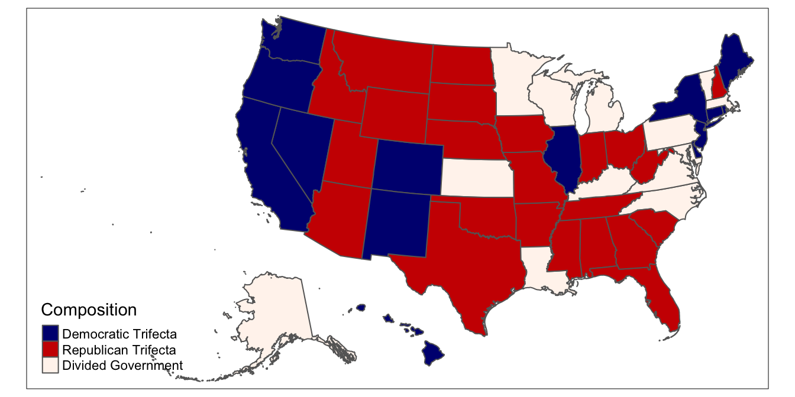
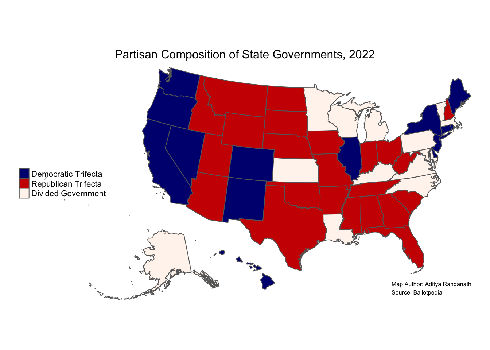

2 Building Static Maps in R Studio
2.1 Load your libraries and set your working directory
# Load libraries
library(tmap)
library(sf)
library(tidyverse)If you don’t already have the packages installed, you must install them before loading the libraries; you can install the libraries with the following:
install.packages(c("tmap", "sf", "tidyverse"))After your libraries are successfully installed and loaded, set your working directory by passing the file path of the directory that contains your data to the setwd function, as in the example below (but note your file path will look different).
# Set your working directory to the directory containing your data
setwd("/Users/adra7980/Documents/git_repositories/gistools_qda/data")If you don’t know the relevant file path, you can set your working directory manually by opening the Session menu, scrolling down to Set Working Directory, clicking Choose Directory, and then following the prompts.
2.2 Read in a spatial dataset
First, let’s read in our spatial dataset, titled usa_shapefile.shp using the st_read function, and then assigning the spatial dataset to a new object named usa_shapefile
# Read in the shapefile named "usa_shapefile.shp" and assign to new object named "usa_shapefile"
usa_shapefile<-st_read("usa_shapefile.shp")## Reading layer `usa_shapefile' from data source `/Users/adra7980/Documents/git_repositories/gistools_qda/data/usa_shapefile.shp' using driver `ESRI Shapefile'
## Simple feature collection with 52 features and 3 fields
## geometry type: MULTIPOLYGON
## dimension: XY
## bbox: xmin: -4088650 ymin: -1696697 xmax: 2258200 ymax: 1565782
## projected CRS: USA_Contiguous_Albers_Equal_Area_Conic2.3 View the spatial dataset’s attribute table
To view the spatial dataset’s attributes, simply print its name:
usa_shapefile## Simple feature collection with 52 features and 3 fields
## geometry type: MULTIPOLYGON
## dimension: XY
## bbox: xmin: -4088650 ymin: -1696697 xmax: 2258200 ymax: 1565782
## projected CRS: USA_Contiguous_Albers_Equal_Area_Conic
## First 10 features:
## GEOID name abbrev geometry
## 1 23 Maine ME MULTIPOLYGON (((2217413 111...
## 2 25 Massachusetts MA MULTIPOLYGON (((2057879 734...
## 3 26 Michigan MI MULTIPOLYGON (((548934.7 12...
## 4 30 Montana MT MULTIPOLYGON (((-633753 865...
## 5 32 Nevada NV MULTIPOLYGON (((-1581791 94...
## 6 34 New Jersey NJ MULTIPOLYGON (((1727369 428...
## 7 36 New York NY MULTIPOLYGON (((1977956 675...
## 8 37 North Carolina NC MULTIPOLYGON (((1192302 -79...
## 9 39 Ohio OH MULTIPOLYGON (((1085606 548...
## 10 42 Pennsylvania PA MULTIPOLYGON (((1733137 446...To view the attribute table in R Studio’s data viewer, pass it to the View function:
View(usa_shapefile)2.4 Map the spatial dataset
To view render the spatial dataset’s geographic attributes, we can use the tmap package. First, pass the name of the spatial object (usa_shapefile) to the tm_shape function, and then indicate that the spatial attributes are polyons with the tm_polygons function. The two functions should be connected with a + sign
## tmap mode set to plotting# Use the "tm_shape" and "tm_polygons" function to render the polygons in the spatial dataset
tm_shape(usa_shapefile)+
tm_polygons()The polygons (here, US states) will be printed in the “Plots” tab of the R Studio interface.
For convenience, we can assign the basic map of the shapefile’s polygons to its own object; here we’ll assign it to an object named usa_map.
## tmap mode set to plotting# Assigns map of "usa_shapefile" geographic attributes to a new object named "usa_map"
usa_map<-tm_shape(usa_shapefile)+
tm_polygons()Now, we simply have to print usa_map to view the geographic attributes of usa_shapefile.
## tmap mode set to plottingusa_map
2.5 Read in the tabular dataset containing the information to map
Now, let’s read in our CSV file, which contains the state government data we’d like to map. To do so, we can pass the name of the CSV file to the read_csv function. We’ll assign the CSV file to an object named usa_trifecta
# Reads in "usa_trifecta.csv" and assigns the data to an object named "usa_trifecta"
usa_trifecta<-read_csv("usa_trifecta.csv")##
## ── Column specification ─────────────────────────────────────────────────────────────────────────────────────────
## cols(
## GEOID = col_double(),
## NAME = col_character(),
## abbrev = col_character(),
## Composition = col_character()
## )To open the dataset, type the name of the object in the console (or run it from your script):
usa_trifecta## # A tibble: 50 x 4
## GEOID NAME abbrev Composition
## <dbl> <chr> <chr> <chr>
## 1 1 Alabama AL Republican Trifecta
## 2 2 Alaska AK Divided Government
## 3 4 Arizona AZ Republican Trifecta
## 4 5 Arkansas AR Republican Trifecta
## 5 6 California CA Democratic Trifecta
## 6 8 Colorado CO Democratic Trifecta
## 7 9 Connecticut CT Democratic Trifecta
## 8 10 Delaware DE Democratic Trifecta
## 9 12 Florida FL Republican Trifecta
## 10 13 Georgia GA Republican Trifecta
## # … with 40 more rowsTo view the CSV data in R Studio’s data viewer, pass the object’s name to the View function:
View(usa_trifecta)2.6 Merge data
Now, let’s merge our tabular CSV data into the spatial dataset, and assign the merged dataset to a new object named usa_shapefile_trifecta. To do so, we’ll use the right_join function. The first argument is the spatial object (usa_shapefile), while the second argument is the tabular data object (usa_trifecta). The third argument, by="abbrev indicates that the two datasets are to be joined based on the information contained in the abbrev field (i.e. 2-letter state codes).
By using right_join, we’re specifying that we want to keep all the records in usa_trifecta, and discard any records that are in usa_shapefile but not usa_trifecta. This effectively removes DC and Puerto Rico from our joined dataset, which is appropriate in the context of this exercise, since these are not currently states.
# Joins the "usa_trifecta" data to "usa_shapefile" based on the "abbrev" field that is in both datasets; the joined dataset is assigned to a new object named "usa_shapefile_trifecta"
usa_shapefile_trifecta<-right_join(usa_shapefile, usa_trifecta, by="abbrev" )Before moving on, observe the contents of usa_shapefile_trifecta to ensure that the join has succeeded.
# Prints contents of "usa_shapefile_trifecta"
usa_shapefile_trifecta## Simple feature collection with 50 features and 6 fields
## geometry type: MULTIPOLYGON
## dimension: XY
## bbox: xmin: -4088650 ymin: -1696697 xmax: 2258200 ymax: 1565782
## projected CRS: USA_Contiguous_Albers_Equal_Area_Conic
## First 10 features:
## GEOID.x name abbrev GEOID.y NAME Composition geometry
## 1 23 Maine ME 23 Maine Democratic Trifecta MULTIPOLYGON (((2217413 111...
## 2 25 Massachusetts MA 25 Massachusetts Divided Government MULTIPOLYGON (((2057879 734...
## 3 26 Michigan MI 26 Michigan Divided Government MULTIPOLYGON (((548934.7 12...
## 4 30 Montana MT 30 Montana Republican Trifecta MULTIPOLYGON (((-633753 865...
## 5 32 Nevada NV 32 Nevada Democratic Trifecta MULTIPOLYGON (((-1581791 94...
## 6 34 New Jersey NJ 34 New Jersey Democratic Trifecta MULTIPOLYGON (((1727369 428...
## 7 36 New York NY 36 New York Democratic Trifecta MULTIPOLYGON (((1977956 675...
## 8 37 North Carolina NC 37 North Carolina Divided Government MULTIPOLYGON (((1192302 -79...
## 9 39 Ohio OH 39 Ohio Republican Trifecta MULTIPOLYGON (((1085606 548...
## 10 42 Pennsylvania PA 42 Pennsylvania Divided Government MULTIPOLYGON (((1733137 446...2.7 Map the trifecta data
Now, we’re ready to map our data. Let’s start with a very rough map, which we’ll assign to an object named usa_trifecta_map. As before, we declare the spatial object that is the basis for the map (here, usa_shapefile_trifecta) using the tm_shape function. Then, we declare the column to be mapped (here, Composition) within the tm_polygons function:
## tmap mode set to plotting# Makes basic map of categories of interest
usa_trifecta_map<-tm_shape(usa_shapefile_trifecta)+
tm_polygons(col="Composition")
# Prints map
usa_trifecta_mapThis default color scheme is not very intuitive, so let’s change it, such that Democratic trifectas are dark blue, Republican trifectas are dark red, and states with divided government are beige.
To work intuitively with colors when dealing with categorical data, it is helpful to first declare the categorical data as a factor variable; specify the levels in the order you want your categories in the legend.
## tmap mode set to plotting# Sets composition variable as factor
usa_shapefile_trifecta<-usa_shapefile_trifecta %>%
mutate(Composition=factor(Composition, levels=c("Democratic Trifecta", "Republican Trifecta", "Divided Government")))Now, create a vector of colors that corresponds to these levels, and assign this vector to an object named ` colors. The first color in the colors vector will be used for the “Democratic Trifecta” category, the second color for “Republican Trifecta”, and so on. The color codes can be found in this helpful color cheatsheet.
Set the colors vector equal to palette within the tm_polygons function:
## tmap mode set to plotting# Maps data with custom colors; also, note the changed order in the legend
colors<-c("navy", "red3", "seashell")
usa_trifecta_map<-tm_shape(usa_shapefile_trifecta)+
tm_polygons(col="Composition",
palette=colors)
usa_trifecta_map
Now, let’s shift the legend, remove the bounding box, remove the legend title, and add a title for the map.
## tmap mode set to plottingusa_trifecta_map<-usa_trifecta_map<-tm_shape(usa_shapefile_trifecta)+ # indicates spatial object to map
tm_polygons(col="Composition", # indicates column with data to map
palette=colors, # sets colors
title="")+ # removes legend title
tm_layout(legend.position = c("left", "center"), # sets legend position
frame=FALSE, # removes map frame
main.title="Partisan Composition of State Governments, 2022", # sets map title
main.title.size=1, # sets map title size
main.title.position="center") # sets map title position
usa_trifecta_mapNow, let’s add a credits section, to indicate the map’s author and give credit to the source of the data. We can do so with the tm_credits function:
usa_trifecta_map<-usa_trifecta_map+
tm_credits("Map Author: Aditya Ranganath\nSource: Ballotpedia", size=0.5) # sets map credits and size
usa_trifecta_map
2.8 Summary Script
The following presents all of the steps we took to create our print map in one streamlined script; it assumes that the libraries are loaded, and that you are in the working directory that contains your data:
# Read in shapefile and assign to object named "usa_shapefile"
usa_shapefile<-st_read("usa_shapefile.shp")## Reading layer `usa_shapefile' from data source `/Users/adra7980/Documents/git_repositories/gistools_qda/data/usa_shapefile.shp' using driver `ESRI Shapefile'
## Simple feature collection with 52 features and 3 fields
## geometry type: MULTIPOLYGON
## dimension: XY
## bbox: xmin: -4088650 ymin: -1696697 xmax: 2258200 ymax: 1565782
## projected CRS: USA_Contiguous_Albers_Equal_Area_Conic# Read in tabular CSV data containing data to map and assign to object named "usa_trifecta"
usa_trifecta<-read_csv("usa_trifecta.csv")
# Join "usa_trifecta" to "usa_shapefile" using "abbrev" as the join variable; use "right_join" to only keep records from "usa_trifecta" (which effectively deletes PR and DC); assign the joined dataset to a new object named "usa_shapefile_trifecta"
usa_shapefile_trifecta<-right_join(usa_shapefile, usa_trifecta, by="abbrev")
# Set the composition variable as a factor variable; specify the levels in the order you want them to appear in the legend
usa_shapefile_trifecta<-usa_shapefile_trifecta %>%
mutate(Composition=factor(Composition, levels=c("Democratic Trifecta", "Republican Trifecta", "Divided Government")))
# create a color vector; the first color will be used to map the first level, second category to map the second level, and so on:
colors<-c("navy", "red3", "seashell")
# Use tmap to create the map, and assign the map to an object named "usa_trifecta_map"
usa_trifecta_map<-tm_shape(usa_shapefile_trifecta)+ # indicate sf object to be mapped
tm_polygons(col="Composition", # specify column to be mapped
palette=colors, # sets tolors
title="")+ # specifies no title for legend
tm_layout(legend.position = c("left", "center"), # sets legend position
frame=FALSE, # removes map frame/bounding box
main.title="Partisan Composition of State Governments, 2022", # sets map title
main.title.size=1, # sets map title size
main.title.position="center")+ # sets map title position
tm_credits("Map Author: Aditya Ranganath\nSource: Ballotpedia", size=0.5) # adds credits
# Prints map
usa_trifecta_map